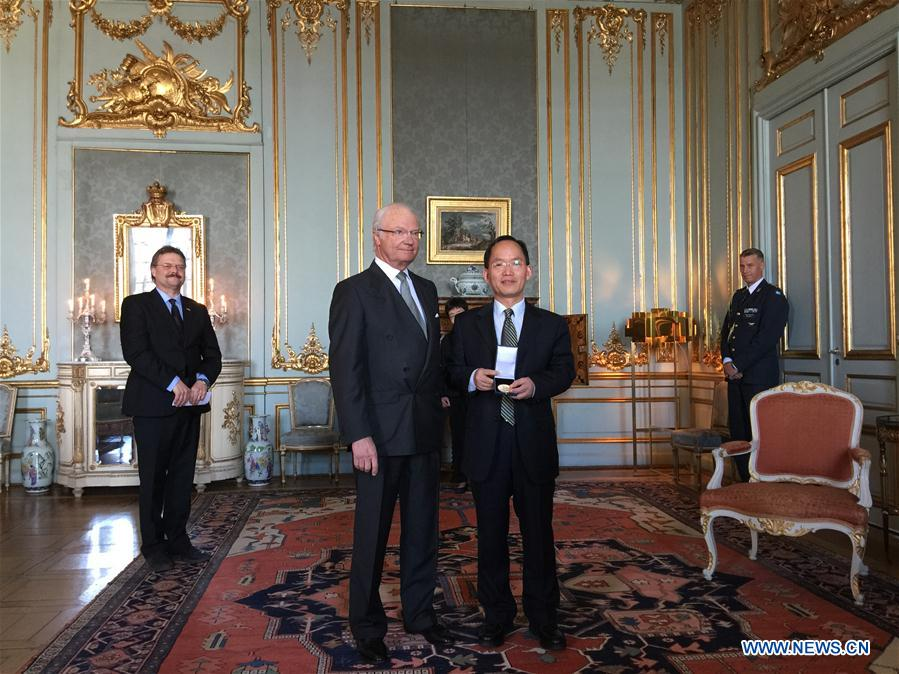

新华社斯德哥尔摩４月１９日电（记者付一鸣）鉴于在青藏高原冰川和环境研究方面做出的贡献，中国科学院院士、青藏高原研究所所长姚檀栋１９日在瑞典王宫获颁２０１７年维加奖，这是中国科学家首次获得该奖。
在颁奖仪式上，瑞典人类学和地理学会主席斯滕·哈格贝里宣读了姚檀栋的获奖成就。随后，瑞典国王卡尔十六世·古斯塔夫向姚檀栋颁发了维加奖奖章，并对他表示祝贺。

哈格贝里在颁奖仪式后告诉新华社记者，姚教授对“第三极”的冰川、季风以及环境的基础性研究对我们了解气候变化至关重要，不仅因为该研究是涉及２０多亿人口的全球性课题，更因为该研究使我们“更好地了解气候变化的过程”。“第三极”是科学家对青藏高原相关地区的称呼，因为这里是南极和北极外的世界最高极。
“姚教授及他的团队是该领域的顶级科学家，维加奖是对他们科研成就的认可，”哈格贝里说。
哈格贝里介绍，维加奖分为自然地理和人文地理两个分支，均为每三年评选一次，姚檀栋今年获得的是自然地理的维加奖章。
１８７８年至１８８０年间，著名地理学家和北冰洋航道开拓者阿道夫·艾瑞克诺登舍尔德率领“维加号”首次通过大西洋和太平洋东北部，完成环绕欧亚大陆的历史性航行。此后，瑞典人类学和地理学会专门设立维加奖，以表彰对全球地理研究做出突出贡献的科学家。
新闻链接：
http://news.xinhuanet.com/politics/2017-04/20/c_1120842697.htm（中文）
http://news.xinhuanet.com/english/2017-04/20/c_136221633.htm （English）